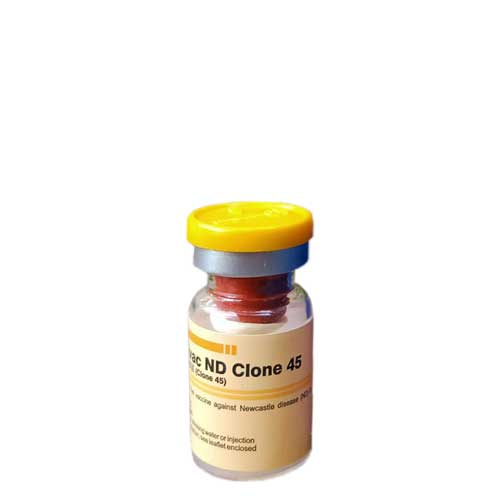

واکسن علیه بیماری نیوکاسل، مدیاوک
📝ترکیب واکسن:
واکسن زنده تخفیف حدت یافته بیماری نیوکاسل میباشد که از سویه Clone 45 می باشد که بر روی جنین تخم مرغ SPF تولید و فرموله شده است. هر دز از واکسن حاوی حداقل 10⁷EID₅₀ ویروس نیوکاسل می باشد.
📝میزان دز و روش مصرف:
واکسیناسیون به روش تزریقی، بینی، چشمی، اسپری و آشامیدنی انجام می پذیرد.
📝برنامه واکسیناسیون:
واکسن کلون 45 بعنوان اولین واکسن (شروع کننده) یا برای نوبت های بعدی می تواند مورد استفاده قرار گیرد.
◽️توصیه می گردد اولین زمان واکسیناسیون در سن 4 روزگی باشد و سپس در 3 الی 5 هفته بعد با همان واکسن کلون 45 یا لاسوتا تزریق دوم انجام پذیرد.
◽️در طیور تخمگذار و مادر تکرار واکسیناسیون بایستی در سن 56 و سپس 112 روزگی انجام پذیرد و سپس هر 2 الی 3 ماه یکبار با تکرار واکسن زنده تخفیف حدت یافته( یا هر 3 الی 6 ماه یکبار با واکسن کشته روغنی نیوکاسل انجام پذیرد (اگر لازم باشد)
🔹برنامه واکسیناسیون پیشنهادی این واکسن به عنوان یک برنامه عمومی می باشد و در شرایط خاص می تواند، با توصیه سازمان دامپزشکی، تغییر یابد.
📝عوارض جانبی
ندارد.
📝شرایط نگهداری:
در درجه حرارت 2 الی 8 درجه سانتیگراد و دور از نور مستقیم خورشید نگهداری شود.
📝بسته بندی و عمر قفسه ای:
واکسن نیوکاسل کلون 45 در ویال های 50، 100، 500، 2000، 1000 و 2500 دزی عرضه شده و تحت شرایط مطلوب نگهداری، تا 2 سال از تاریخ تولید اعتبار مصرف دارد.
◻️روش قطره چکانی در چشم/بینی:
بعد از ترکیب شدن با یک رقیق کننده مناسب یا بافر نرمال به خوبی تکان داده شود، به صورتی که کف تولید نگردد. سپس با استفاده از یک قطره چکان استاندارد، یک قطره در چشم هر پرنده چکانده شود و مطمئن شوید که قطره به صورت کامل جذب می شود ( با چندین بار پلک زدن). این روش بهترین شیوه برای اطمینان از مایه کوبی انفرادی است و بر دیگر روش ها ارجحیت دارد. در روش بینی: منفذ یکطرف را با دست ببندید و سپس با استفاده از قطره چکان استاندارد یک قطره از محلول آماده شده (رقیق شده) را در منفذ دیگر بینی بچکانید. جوجه را پس از اطمینان از جذب (تنفسی) واکسن در بینی رهاسازی نمائید.
◻️روش آشامیدنی:
◽️2 الی 3 ساعت قبل از تجویز واکسن منع مصرف آب داده شود (در هوای گرم فقط 1 ساعت).
◽️تعداد آبخوری ها بایستی به تعداد کافی جهت توزیع آب با حجم مطلوب و بطور همزمان در اختیار طیور قرار گیرد. مقدار آب کافی جهت واکسیناسیون می بایستی تهیه گردد و حداکثر تا 2 ساعت پس از زمان باز کردن ویال ها میبایست واکسیناسیون کامل شود.
◽️از آبخوری های با جنس حلبی استفاده ننمائید .
◽️از آب حاوی مواد ضدعفونی کننده در بازه زمانی 48 ساعت قبل و 24 ساعت بعد از واکسیناسیون استفاده نگردد.
◽️آب شرب نبایستی حاوی باقیمانده فلزات یا کلرین باشد. در صورت موجود نبودن آب مقطر، ازآب حاوی مدی میلک (Medimilk) (شیر خشک چربی گرفته شده) به میزان 2 تا 3 گرم به ازای هر لیتر آب یا 20 تا 30 گرم شیر خشک به ازای هر 10 لیتر آب، که 30 دقیقه قبل از انجام واکسیناسیون محلول شده باشد، استفاده نمائید. استفاده از آب حاوی شیر خشک چربی گرفته شده در حفظ کارائی واکسن موثر می باشد.
◽️نحوه ترکیب کردن واکسن: نیمی از ویال واکسن را با آب پر کنید و سپس ویال را بسته و به خوبی تکان دهید سپس مابقی واکسن را اضافه نمائید.
◽️بمنظور اطمینان حاصل شدن از این که همگی طیور دز مناسب واکسن را دریافت می کنند، می بایست کل آب مورد نیاز را دو قسمت کرده و نیمه دوم آن را در 30 دقیقه پایانی بازه زمانی واکسیناسیون مورد استفاده قرار دهید.
◽️توجه گردد که نیمه دوم آب آشامیدنی حاوی واکسن را در سایه ذخیره سازی نمائید.
◻️روش تزریقی:
◽️1000 دز از این واکسن را با 500 میلی لیتر آب مقطر استریل ترکیب شود و سپس 0.5 دز را به صورت داخل عضله ای در محل عضلات سینه و ران و یا به صورت زیر پوستی در محل پایینی گردن تزریق شود.
◽️وسایل تزریق و سرنگ اتوماتیک واکسن، قبل از واکسیناسیون، در آب جوش برای مدت 30 دقیقه قرار داده شود.
📝احتیاطات مصرف:
◽️از استفاده ویالی که ترک خورده یا درب آن صدمه دیده خودداری نمائید .
◽️ویال حاوی واکسن آماده را بخوبی قبل و در حین واکسیناسیون مخلوط نمائید.
◽️بلافاصله پس از باز شدن ویال واکسن حداکثر تا 2 ساعت بطور کامل مصرف گردد.
◽️سرنگ مورد استفاده در واکسیناسیون بایستی پس از تفکیک اجزا آن، به مدت 30 دقیقه در آب جوشانده شود (.قبل از شروع واکسیناسیون). مدت زمان جوشیدن از زمان جوش آمدن آب محاسبه گردد.
◽️از واکسیناسیون پرندگان بیمار و دچار نقص ایمنی خودداری شود، چراکه آنها نمی توانند به حداکثر تیتر ایمنی پس از واکسیناسیون نائل شوند.
◽️پس از اتمام واکسیناسیون دست ها را بخوبی شسته و ضدعفونی نمائید.
◽️در صورت تزریق اتفاقی واکسن به خود بهمراه بروشور واکسن به پزشک مراجعه نمائید.